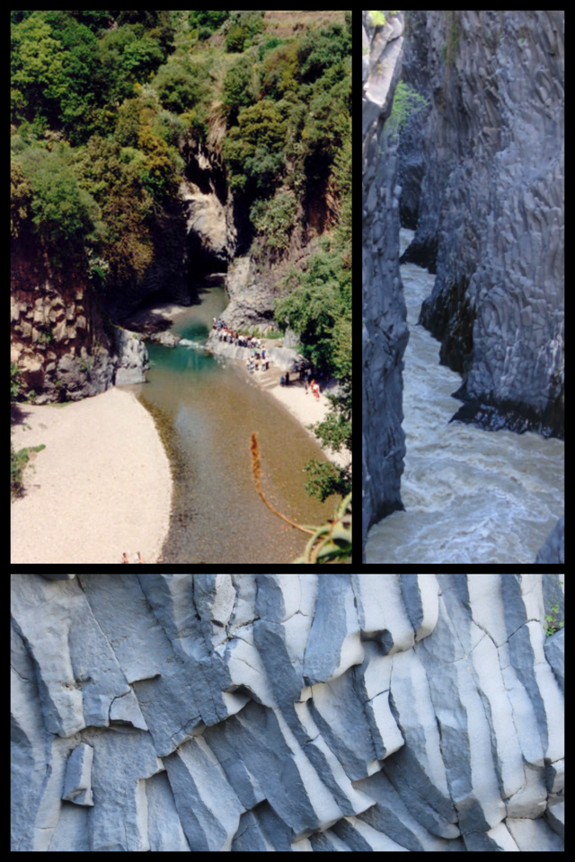
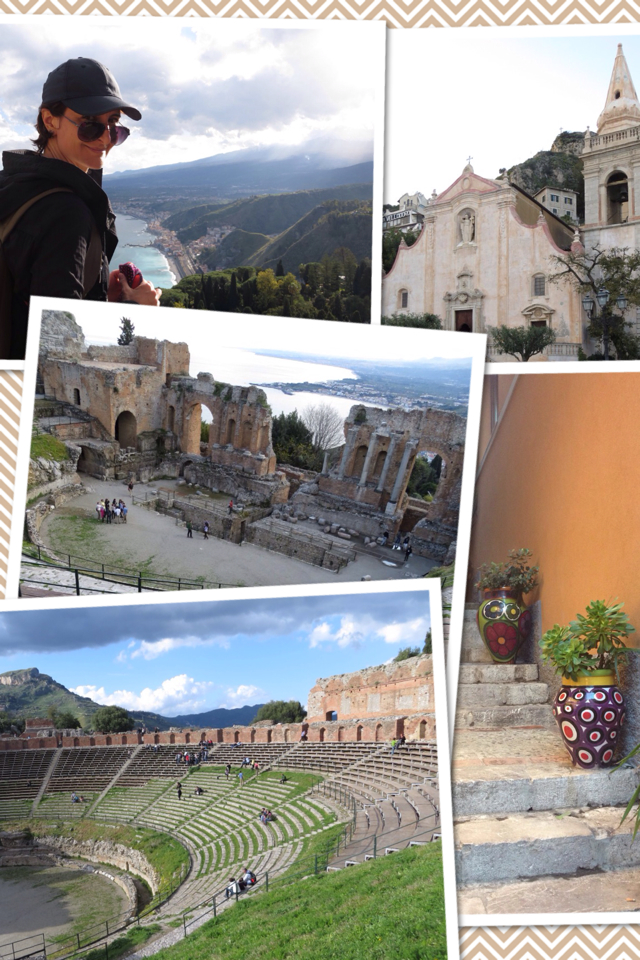

Gole di Alcantara. Top left photo courtesy of Wikimedia Taormina was our next stop; a favorite stop for many of us. We left our minivan in the outskirts, in a designated garage, since cars are not allowed in the historical center. And that's exactly what makes Taormina a gem: a long pedestrian avenue, between rows of traditional houses decorated with flower pots and ceramic vases.
First off, we went to see the Greek Theater. It is amazing how beautiful this site is, with its panoramic view over the sea and the surroundings. I couldn't stop imagining how it must have been watching a performance here some hundreds of years ago, in a theater that is still very well preserved today. And then we did the passeggiata: walking on the main street on a very slow pace, in order to give ourselves enough time to fully examine the window shops where both luxury and traditional goodies were sold, was an extremely pleasant experience (especially for the ladies of the group). We arrived at Fiumefreddo late at night. We made a reservation at the hotel La terra dei Sogni (which means The Land of Dreams -only the name makes you want to stay here). The staff was incredibly welcoming. Too bad we were going to stay here only a few hours...